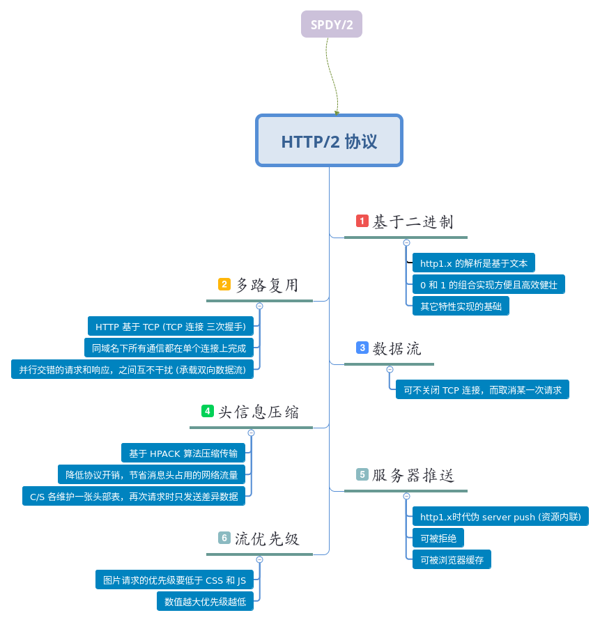

我的理解

追本溯源
HTTP/2 基于 google 的 SPDY/2 开发。
与 SPDY 不同 HTTP/2 支持明文 HTTP 传输，而 SPDY 强制使用 HTTPS；HTTP/2 消息头的压缩算法采用 HPACK ，而 SPDY 采用 DEFLATE 。
PS: 在 Nginx 中必须在开启 HTTPS 的前提下才能使用 HTTP/2
new in HTTP/2
- 二进制协议
- 多路复用
- 数据流
- 头信息压缩
- 服务器推送
- 流优先级
why HTTP/2 ?
我们先了解几个概念，HTTP/2 将所有传输的信息分割为更小的消息和帧，并对它们采用二进制格式的编码：
- 帧（Frame）：HTTP/2 通信的最小单位，每个帧包含帧首部，至少也会标识出当前帧所属的流
- 消息（Message）：由一个或多个帧组合而成，例如请求和响应
- 连接（Connection）：与 HTTP/1 相同，都是指对应的 TCP 连接
- 流（Stream）：已建立的连接上的双向字节流
还有其它概念性的东西就不一一罗列了，仅仅从一个前端开发者的角度出发， HTTP/2 给人最直观的特性就是 多路复用 和 服务器推送 了
先说说这多路复用：
要知道现代浏览器单域最大 TCP 连接数一般为 4～6 个左右，这意味着超过这个数量级的连接请求将被暂时挂起，如果请求数量较多文件又大那么就会有很明显延迟。这也就是为什么在实际开发中，要求将多个 js （或者 css） 文件打包压缩在一个文件中，还有雪碧图（CSS Sprites），再有 CDN 部署等等之类的 HACK。
而在 HTTP/2 的世界里，因为多路复用的新特性 -- 简单点说就是所有请求都是通过一个 TCP 连接并发完成，就不需要额外增加工作量了。
再来了解下服务器推送：
其实在 HTTP1.X 时代我们就有体验过伪服务器端推送了，就是把 JS 或 CSS 资源内联到 HTML 中，如此一来在响应了 HTML 文档请求后就可直接渲染一个完整的页面，这一手段在首屏优化中十分常见（可见百度）；这么一来问题也很突出，就是无法利用浏览器缓存，浪费流量。
而 HTTP/2 的服务器推送就可神气了，在服务器接受到请求时，就可分析出要推送的资源（无需产生额外的网络请求），然后先发个 PUSH_PROMISE 帧给浏览器，再由浏览器决定是否接受推送（当前无相应缓存则接受否则拒绝），显然这整个过程无需程序员操心，浏览器和服务器会自行沟通。
很可惜 Nginx 还暂不支持 server push (坑了我一天)，供上 Node 核心代码（完整源码请看 demo）聊表慰藉：
// ...
let push_style = res.push('/static/style.css', {
status: 200,
method: 'GET',
request: {
accept: '*/*'
},
response: {
'Content-Type': 'text/css'
}
});
push_style.end(static.style);
// ..
体验
HTTP/2 is the future of the Web, and it is here!
学习文档
- HTTP/2 新特性浅析
- HTTP/2协议–特性扫盲篇
- A kick-start into server push
- HTTP/2 Server Push with NGINX, CloudFlare and WordPress